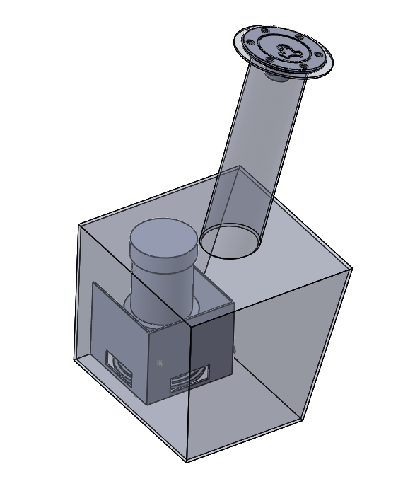

My Role
As a member of the powertrain team, I am responsible for the entire fuel tank and fuel delivery system — from design and CAD modeling through structural analysis and hands-on welding and fabrication.
The 2026 FSAE regulations require the fuel tank to withstand rigorous safety standards, including a tilt test and endurance test to ensure driver safety.
The Solution
I designed a custom aluminum fuel tank featuring:
- Baffle System: Integrated internal baffling to minimize fuel sloshing under cornering loads.
- BOM Selection: Researched and sourced all components to maximize performance and meet regulations.
- CAD Modeling: Modelled optimum shape and chassis fitment to prevent fuel starvation.
- Validation: Performed fluid flow simulations (CFD) to confirm adequate pump supply under all conditions.

Fuel tank CAD model — SolidWorks
The Result
The tank is currently in the fabrication phase — to be welded and pressure-tested. Final validation will be conducted against FSAE regulations ahead of the 2026 Michigan competition.
Fabrication in progress